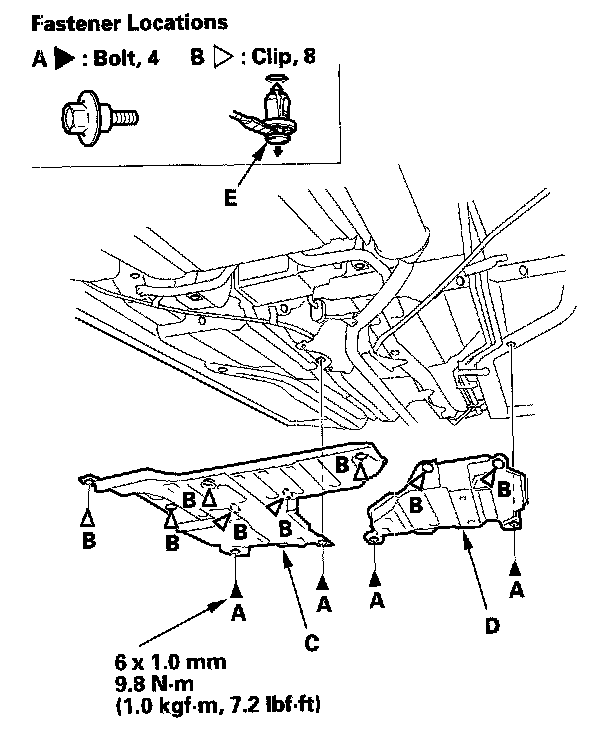

Middle Floor Undercover Replacement
Middle Floor Undercover ReplacementFor Some Models
NOTE: Take care not to scratch the body.

1. Remove the bolts (A), and detach the clips (B), then remove the left middle floor undercover (C) and right middle undercover (D).
NOTE: To remove the clips B, pry the inner clip up at the edge near the line (E) on its head.
2. Install the undercover in the reverse order of removal, and note these items:
- Check if the clips are damaged or stress-whitened, and if necessary, replace them with new ones.
- Push the clips into place securely.